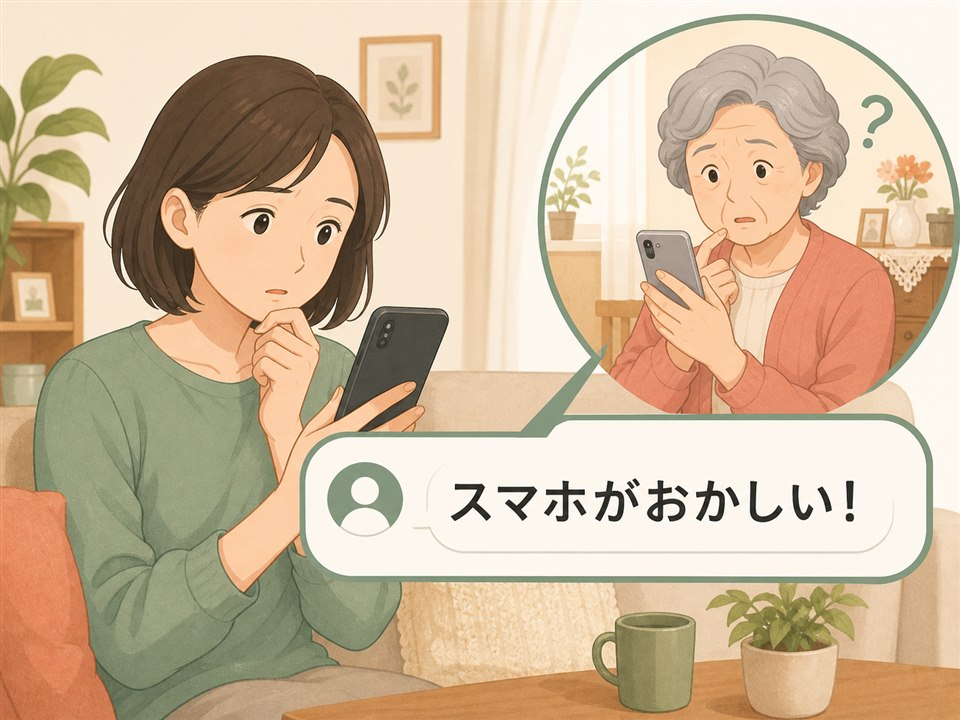

親から「これ払わないとダメ？」とSMSが届いた。家族が最初に確認したこと
リンクを開く前と、すでに開いてしまった後。離れていても確認できる順番をまとめます。
親のスマホに悩む、あなたへ
「怪しいSMSを開いた」「スマホがおかしい」「LINEを教えても伝わらない」。高齢の親を助けたい子ども世代へ、対処法と家族で試したことを届けます。
同じ悩みの記事を探す
MOST READ
同じように親のスマホで悩む家族から、よく読まれている3本です。
NEW ARTICLES
リンクを開く前と、すでに開いてしまった後。離れていても確認できる順番をまとめます。
操作より難しかったのは、伝え方でした。ケンカにならずに進めるために試した工夫です。
画面が暗い、音が出ない、通知が消えない。家族から届いた相談と確認したことの記録です。
WHY I WRITE
79歳になる母から届いた一本の電話が、このブログの始まりでした。実家で目にしたのは、たまった通知と怪しいメール。そして「不安はあるけど、どうしたらいいか分からない」という母の言葉でした。
このブログを始めた理由を読む →YOUR STORY
「うちの親も同じ」「こんな相談が来た」という声を、これからの記事づくりに役立てます。パスワードなどの個人情報は送らないでください。
親のスマホ相談を送る